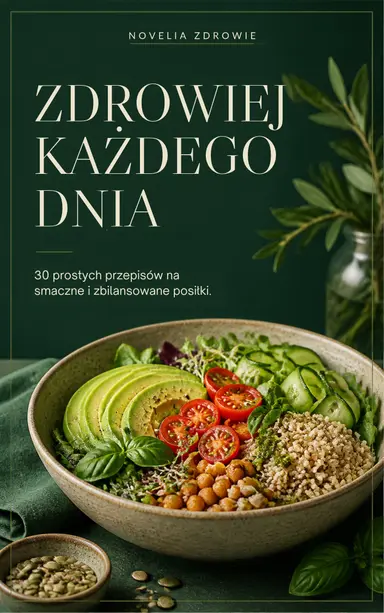
Zdrowiej każdego dnia
30 prostych przepisów na smaczne i zbilansowane posiłki
Śniadania, obiady, kolacje i przekąski z wartościami odżywczymi, plan posiłków na 3 dni i praktyczny poradnik.
39,99 zł
NOVELIA ZDROWIE · e-book
„Zdrowiej każdego dnia” to 32 proste przepisy na śniadania, obiady, kolacje i przekąski, plan posiłków na 3 dni z listą zakupów oraz praktyczny poradnik – bez restrykcyjnych diet i skomplikowanych składników.
Cena e-booka
39,99 zł
E-book PDF · A4 · 50 stron Pobranie po potwierdzeniu płatności
Poznaj e-booka
30 prostych przepisów na smaczne i zbilansowane posiłki.
„Zdrowiej każdego dnia” to praktyczny przewodnik po codziennej, zdrowej kuchni. Znajdziesz w nim proste przepisy na śniadania, obiady, kolacje i przekąski – z dostępnych składników i bez skomplikowanych technik.
Każdy przepis zawiera listę składników z gramaturami, czas przygotowania, liczbę porcji i orientacyjne wartości odżywcze obliczone na podstawie ilości składników. Książkę uzupełniają rozdziały o komponowaniu zbilansowanych posiłków, planowaniu jadłospisu i gotowaniu z wyprzedzeniem.
Na końcu czeka przykładowy plan posiłków na 3 dni z listą zakupów oraz poradnik: jak czytać etykiety, urozmaicać posiłki i ograniczać marnowanie żywności.
Dla Ciebie, jeśli:
Przykładowe strony publikacji – kliknij, aby powiększyć.
Format PDF · 50 stron · natychmiastowy dostęp po zaksięgowaniu płatności
Co znajdziesz w środku?
Od zasad komponowania posiłków, przez 32 przepisy, po plan na 3 dni i praktyczny poradnik. Każdy przepis zawiera gramatury, czas, liczbę porcji i orientacyjne wartości odżywcze.
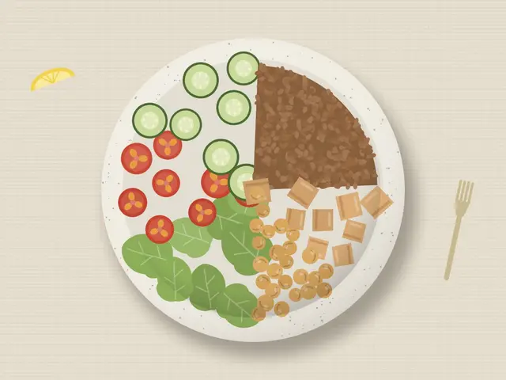
IJak komponować zbilansowany talerz, podstawowe grupy produktów, planowanie dnia i gotowanie z wyprzedzeniem.
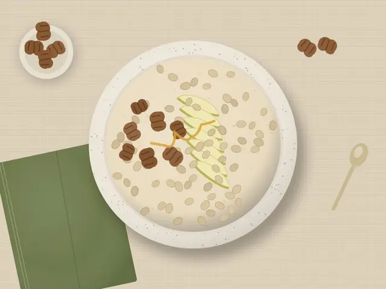
IIOwsianka z gruszką, szakszuka, jaglanka kakaowa, placuszki owsiano-bananowe, wrapy na wynos i inne.
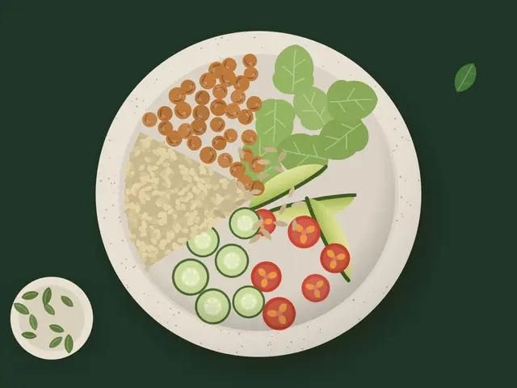
IIIKurczak z jednej blachy, curry z ciecierzycą, łosoś z fasolką, leczo z fasolą, pęczotto, miska z komosą.
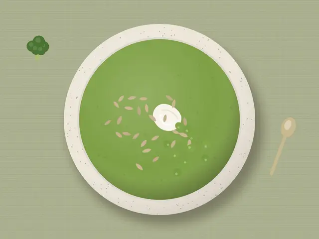
IVSałatka z pieczonym burakiem, krem z brokułu i groszku, frittata z pieczarkami, ciepła sałatka z soczewicą.
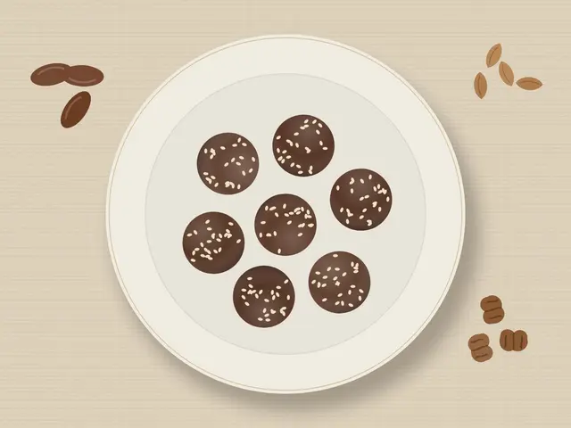
VHummus z pieczonej papryki, kulki z daktyli i kakao, ciasteczka owsiane, pieczone jabłka ze skyrem.
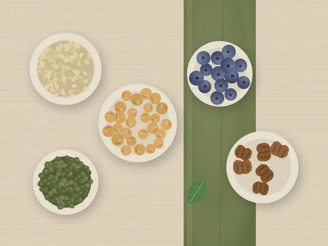
VIGotowy plan dla dwóch osób z wykorzystaniem resztek, automatycznie zsumowana lista zakupów i organizacja kuchni.
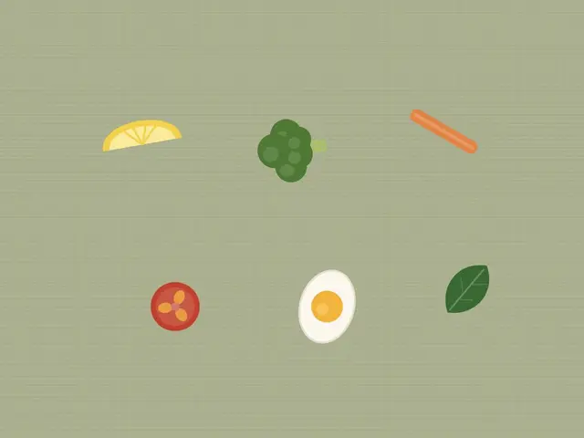
VIIJak czytać etykiety, komponować urozmaicone posiłki, ograniczać marnowanie żywności – i jak utrzymać nowe nawyki.
Uczciwie o wartościach odżywczych
Kaloryczność i makroskładniki obliczyliśmy na podstawie gramatur składników i ogólnodostępnych tabel składu żywności. Są orientacyjne – i tak je oznaczamy.
Publikacja ma charakter edukacyjny i nie zastępuje konsultacji z lekarzem lub dietetykiem.
Dlaczego NOVELIA ZDROWIE?
Jesteśmy wydawnictwem cyfrowym, które tworzy przystępne publikacje o zdrowym odżywianiu – dla osób, które chcą jeść lepiej, ale żyją w prawdziwym, zabieganym świecie.
Uczymy patrzeć na talerz całościowo: proporcje, różnorodność i jakość produktów zamiast liczenia każdej kalorii i listy zakazów.
Przepisy z produktów dostępnych w każdym sklepie, gotowanie na dwa dni, listy zakupów i plany, które da się wdrożyć od jutra.
Piszemy prostym językiem i nie obiecujemy cudów. Dzielimy się wiedzą, która pomaga podejmować własne, rozsądne decyzje.
Zamienniki składników, pomysły na resztki i sezonowe warianty – tak, by zdrowa kuchnia nigdy się nie nudziła.
Sklep NOVELIA
E-booki w formacie PDF, gotowe do pobrania po opłaceniu zamówienia.

30 prostych przepisów na smaczne i zbilansowane posiłki
Śniadania, obiady, kolacje i przekąski z wartościami odżywczymi, plan posiłków na 3 dni i praktyczny poradnik.
39,99 zł
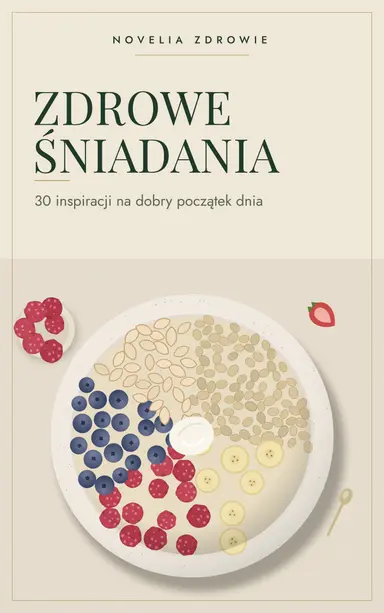
30 inspiracji na dobry początek dnia
Owsianki, kasze na ciepło, pasty, dania z jajek, placuszki i śniadania w słoiku – na każdy rodzaj poranka.
29,99 złcena planowana
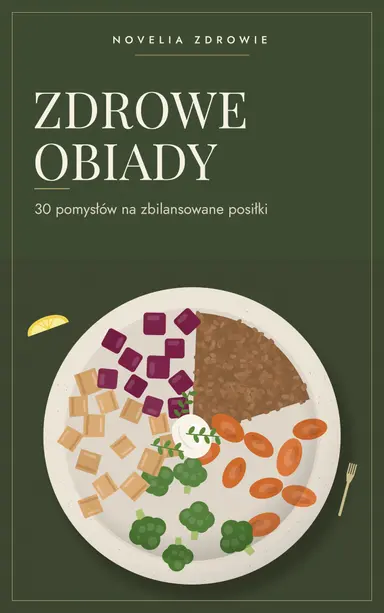
30 pomysłów na zbilansowane posiłki
Zupy, dania jednogarnkowe, ryby, drób i kuchnia roślinna – z planerem obiadów na cały tydzień.
29,99 złcena planowana
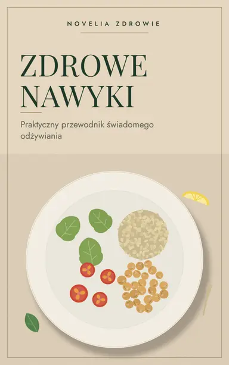
Praktyczny przewodnik świadomego odżywiania
Jak krok po kroku zmieniać nawyki żywieniowe – z 4-tygodniowym planem zmian i dziennikiem nawyków.
29,99 złcena planowana
Jak to działa?
Dodajesz publikację do koszyka lub klikasz „Kup teraz”. Podajesz adres e-mail, na który wyślemy link.
Płacisz bezpiecznie na stronie operatora płatności. Nie przechowujemy danych Twojej karty.
Po potwierdzeniu płatności link do pliku PDF pojawi się na ekranie i trafi na Twój adres e-mail.
Zacznij jeszcze dziś
32 przepisy, plan posiłków na 3 dni i praktyczny poradnik w jednym pliku PDF. Pobierzesz go od razu po potwierdzeniu płatności.
39,99 zł